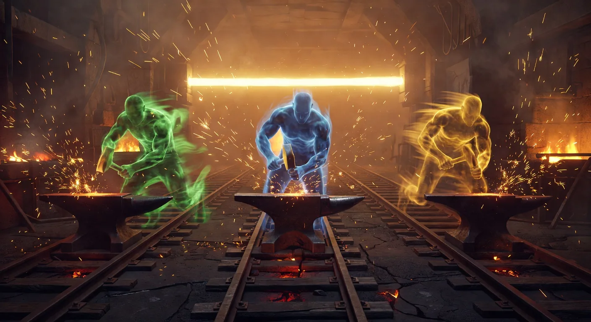
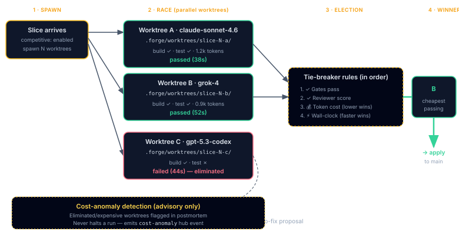

The Competitive Loop
Opt-in worktree races, winner election, auto-fix proposals, and cost-anomaly detection, three new inner-loop subsystems added in v2.58.0.
- Worktree race, a worktree is a sandbox copy of your repo. Instead of one model trying a slice, Plan Forge can spawn 2–3 sandboxes in parallel, let different models compete, and pick whichever produces the best result. (A “winner election” is just “score them and choose one.”)
- Auto-fix proposals, when a slice fails, the loop drafts a patch file in
.forge/proposed-fixes/for you to review. It never applies the fix automatically. - Cost-anomaly detection, watches token spend per slice. If today's run costs 3× yesterday's, you get a warning. Advisory only; doesn't stop the run.
For the canonical system-wide overview covering Phase-25 and Phase-26 together, see The Self-Deterministic Agent Loop.
Worktree race → winner election

reviewer score -> token cost lower wins -> wall-clock faster wins), Winner (worktree B chosen as cheapest passing, applied to main). Eliminated worktrees retained for trace and auto-fix proposal generation. Cost-anomaly detection runs advisory-only and never halts a run." class="diagram-img diagram-img-md my-4" />When a slice is marked for competitive execution, the orchestrator spawns a worktree per strategy, runs each in isolation, and elects a single winner. Losing worktrees are cleaned up; only the winner's changes enter the working tree.
![Competitive loop flowchart. Start: slice marked competitive. A decision node spawn-worktrees branches to Strategy A (.forge/worktrees/A/) and Strategy B (.forge/worktrees/B/). Both worktrees run a validation gate and then conditionally invoke a reviewer when innerLoop.reviewer.enabled is true. The two reviewer outputs converge on a winner-election decision node. The path labeled gate-pass-plus-best-reviewer-score promotes the winner to the working tree; the path labeled tie-on-gate-and-reviewer drops into a token-cost tie-breaker that feeds back into winner. Winner flows through clean-up of losing worktrees to slice-committed. A dotted secondary path connects gate-failure on either strategy to an auto-fix-proposal decision node, which routes small local diffs to .forge/proposed-fixes/*.patch and complex failures to a postmortem record.](assets/diagrams/competitive-loop-flow.svg)
Winner election rules
Election is deterministic. The orchestrator walks the rules in order and stops at the first one that produces a unique winner.
- Gate result. Strategies whose validation gate failed are eliminated first. If only one strategy passes, it wins.
- Reviewer score. If
innerLoop.reviewer.enabledis true, the highest reviewer score among remaining strategies wins. - Token-cost tie-breaker. If reviewer is off or the top score is tied, the lowest total token cost wins. This keeps the loop cost-sensitive even under competitive execution.
- Deterministic fallback. On a true tie across all three, the orchestrator picks the lexicographically first strategy name so reruns elect the same winner.
Auto-fix patch proposals
When a slice's validation gate fails and the trajectory suggests a small local correction (single file, under a few hundred lines of diff), the orchestrator drafts a patch file instead of retrying blindly.
- Patches are written to
.forge/proposed-fixes/<fixId>.patchwith metadata in.forge/fix-proposals.json. - Nothing is applied automatically. The operator (or a reviewer agent) must invoke
applyFixProposal; the patch is git-apply-style sorollbackFixProposalcan undo it cleanly. - To allow the orchestrator to apply patches itself on gate-fail retries, set
innerLoop.autoFix.applyWithoutReview: true. This is off by default for a reason, review the patch first.
Cost-anomaly detection
Every slice's total token cost is compared against the rolling per-model median (default window: 20 runs). Ratios above innerLoop.costAnomaly.ratio (default 2.0) are logged to .forge/cost-anomalies.jsonl and surfaced in the Dashboard's Inner Loop tab.
Detection is advisory: anomalies never halt a run. The signal is there so you can investigate why a slice drifted, stale prompts, model degradation, a gate that's suddenly looping, before it shows up as a surprise on the month's bill.
Configuration summary
All three subsystems live under a single innerLoop key in .forge.json. New installs receive these defaults via the v2.58 best-defaults preset; existing projects opt in per-subsystem.
{
"innerLoop": {
"competitive": { "enabled": false, "maxParallel": 2, "timeoutSec": 1800 },
"autoFix": { "enabled": true, "applyWithoutReview": false },
"costAnomaly": { "enabled": true, "ratio": 2.0, "medianWindow": 20 }
}
}